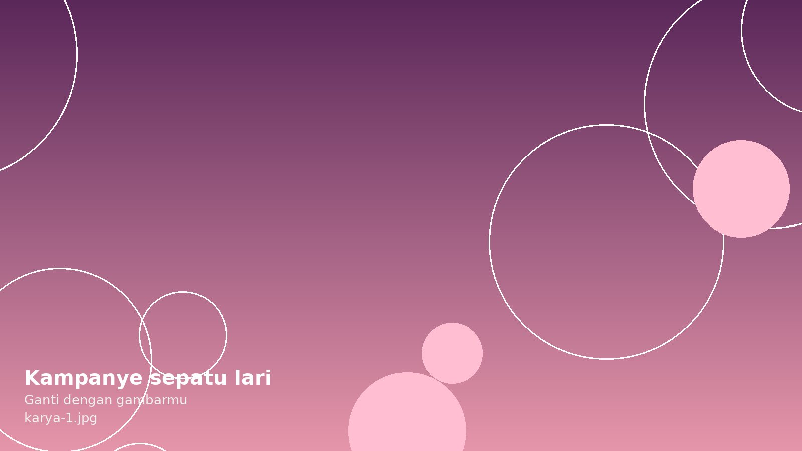
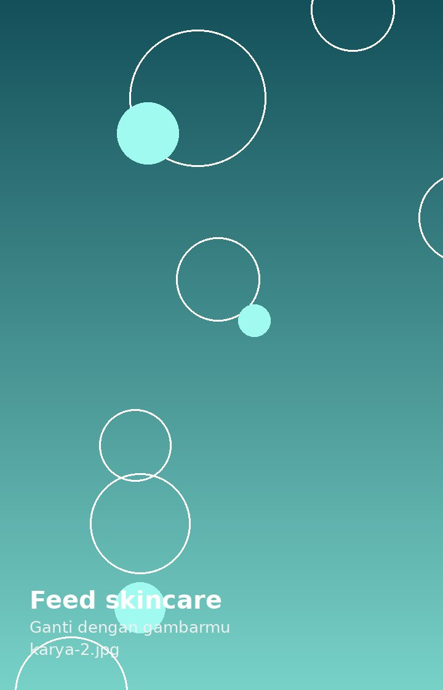
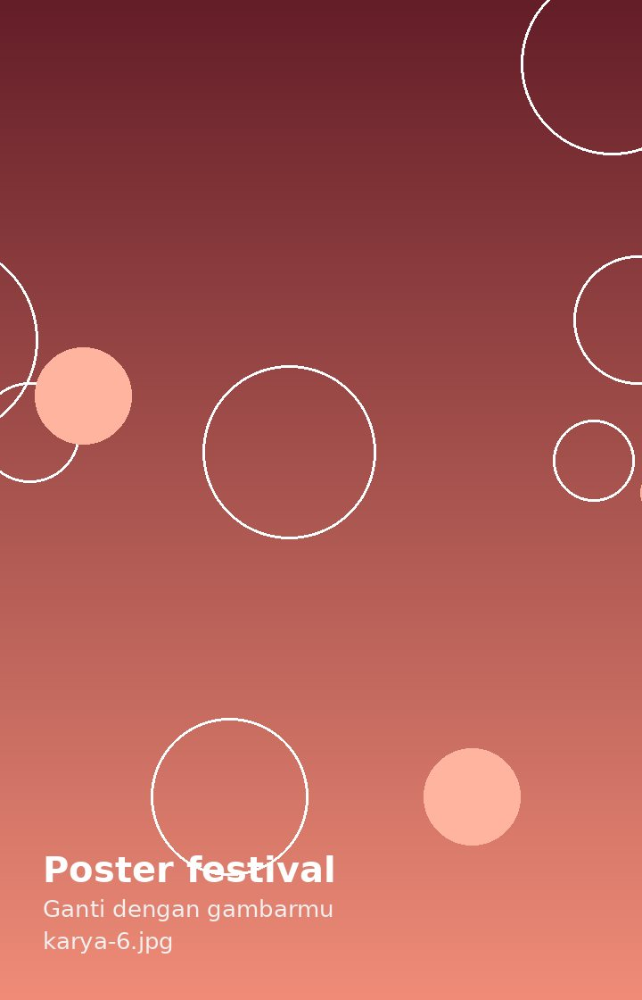
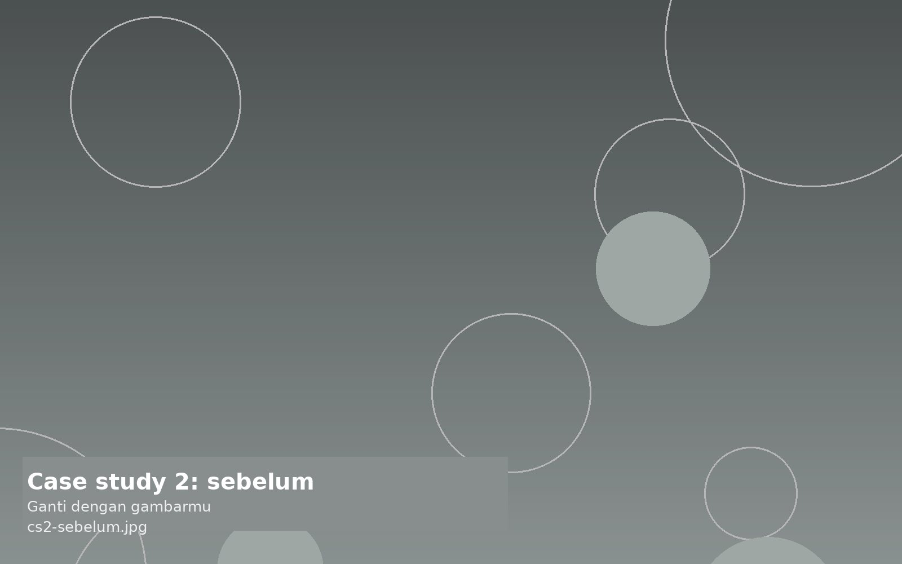
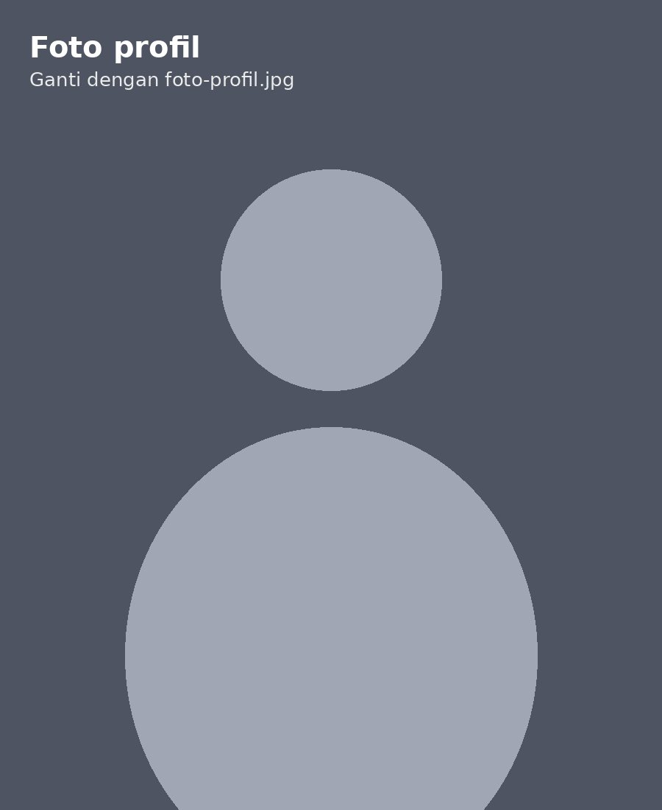

Kampanye peluncuran sepatu lari
VideoVideo utama 60 detik dan 6 potongan Reels. 1,2 juta views gabungan.
Terbuka untuk posisi Content Designer atau Creative Associate di agency, Jakarta
Content Designer
Content designer yang mengerjakan konten dari ide sampai jadi: desain, video, dan copy. Tiga tahun membantu brand lokal tampil konsisten di media sosial.




Video utama 60 detik dan 6 potongan Reels. 1,2 juta views gabungan.
30 konten sebulan. Engagement naik 2,4 kali.
Seri 12 caption dan 3 headline iklan untuk bulan November.
Caption 1: Hujan pertama bulan ini. Payung boleh lupa, kopi jangan.
Caption 2: Jalanan basah, kursi dekat jendela masih kosong. Kamu tahu harus ke mana.
Headline iklan: Es kopi susu tetap laku di musim hujan. Kami juga heran.
Seri 12 video untuk brand bumbu. Rata-rata 85 ribu views.
Logo, palet warna, dan penerapan di kemasan serta papan nama.
Poster utama dan turunannya dalam 6 ukuran.
Script 45 detik. 410 ribu views.
Hook (0–3 detik): “Kamu salah cuci sneakers selama ini.” Sikat gigi bekas di tangan.
Isi (3–38 detik): Tiga kesalahan umum: pakai mesin cuci, jemur di bawah matahari langsung, dan pakai deterjen biasa.
Penutup (38–45 detik): “Simpan video ini sebelum weekend.”
2 menit. Wawancara pemilik dan proses produksi.


geser untuk lihat sebelum & sesudah
Brand ini posting setiap hari, tapi tampilannya berbeda-beda karena dikerjakan bergantian oleh tiga orang.
Tidak ada panduan visual, dan setiap konten dibuat dari nol sehingga produksinya lambat.
Saya menyusun 6 template konten berdasarkan tujuan (edukasi, testimoni, promo), lalu membuat panduan warna dan tipografi sederhana. Alasannya, tim kecil butuh sistem yang bisa diulang, bukan desain yang selalu baru.
engagement rate dalam 3 bulan. Waktu produksi per konten turun dari 3 jam menjadi 1 jam.


geser untuk lihat sebelum & sesudah
Brand meluncurkan seri sepatu baru dan butuh satu video utama plus potongan untuk Reels dan TikTok.
Semua footage berasal dari satu hari shooting, tapi harus cukup untuk tujuh video dengan format berbeda.
Saya menulis naskah dengan struktur modular, sehingga tiap adegan bisa berdiri sendiri sebagai Reels. Video utama diedit lebih dulu, lalu dipotong per adegan. Alasannya, satu kali shooting bisa menghasilkan banyak konten tanpa terasa diulang.
views gabungan dalam dua minggu. Stok seri pertama habis dalam 10 hari.

Saya mulai dari desain feed Instagram untuk usaha teman, lalu belajar mengedit video dan menulis copy karena klien butuh semuanya sekaligus. Tiga tahun terakhir saya bekerja freelance untuk lebih dari 40 brand lokal.
Sekarang saya ingin bergabung dengan tim kreatif di agency, supaya bisa mengerjakan kampanye yang lebih besar dan belajar dari strategist serta art director.